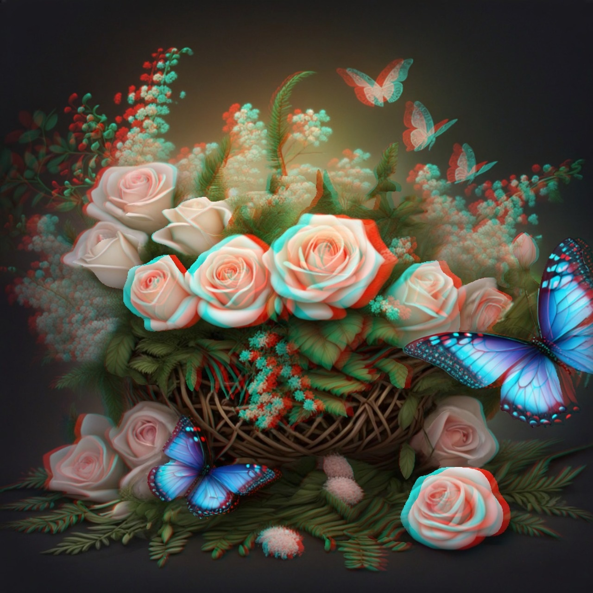
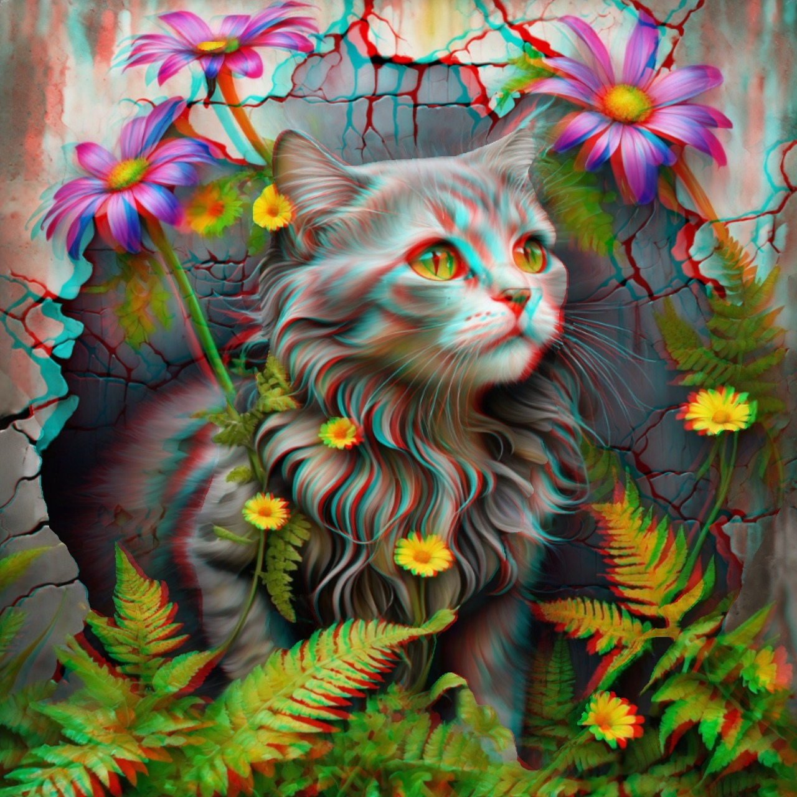
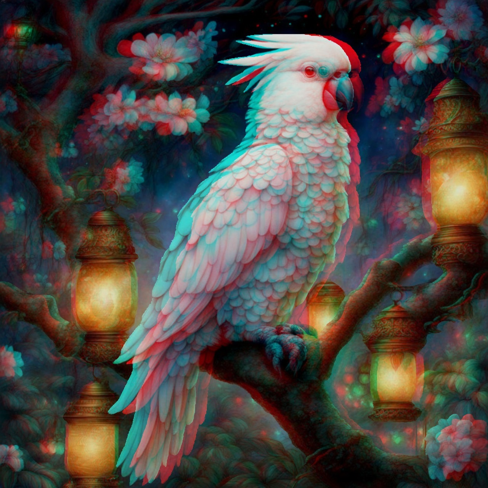
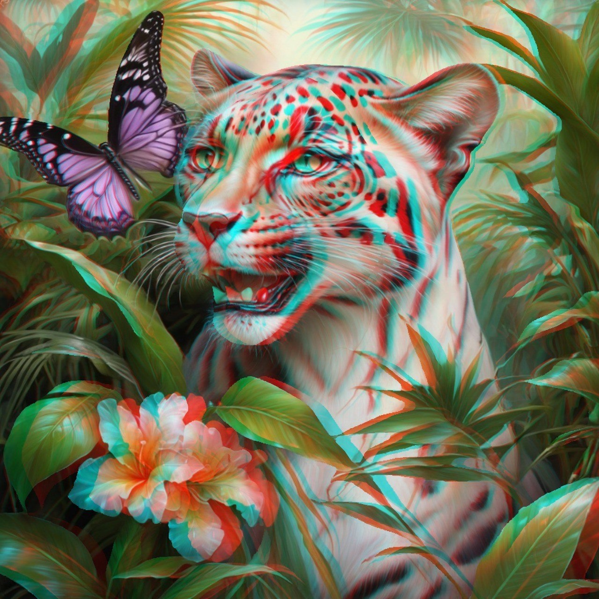
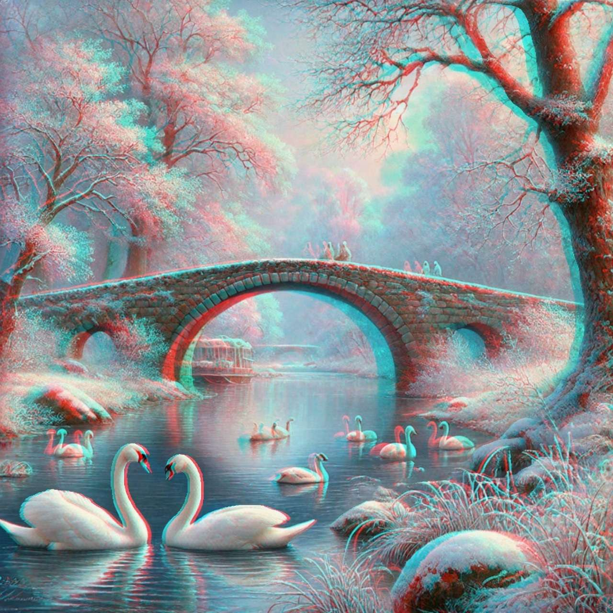
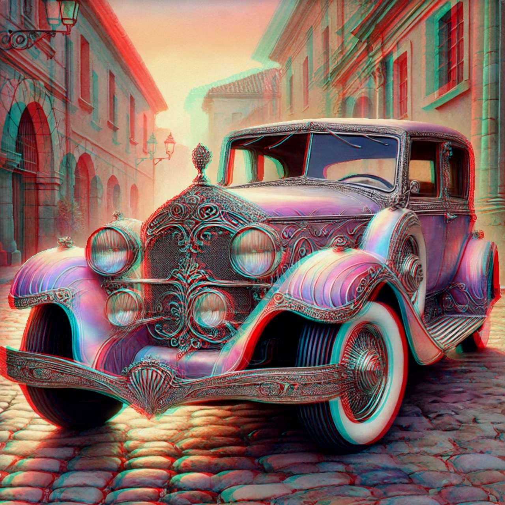
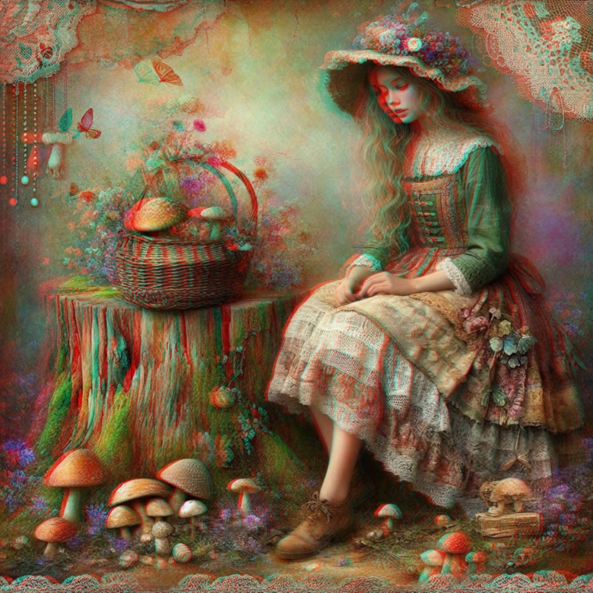
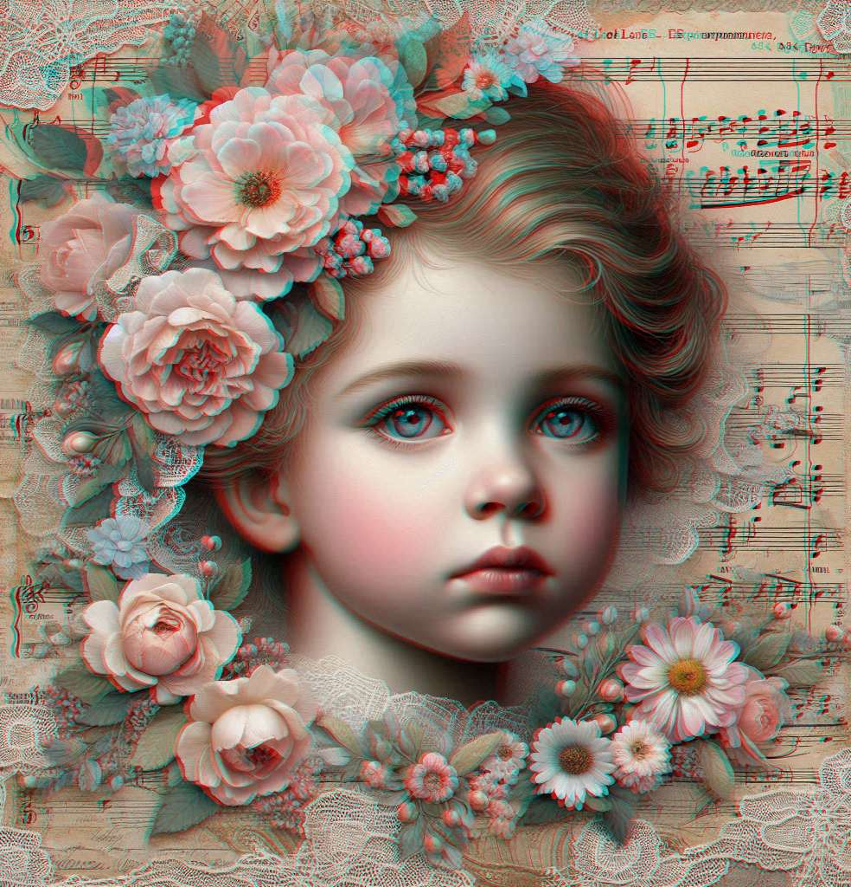
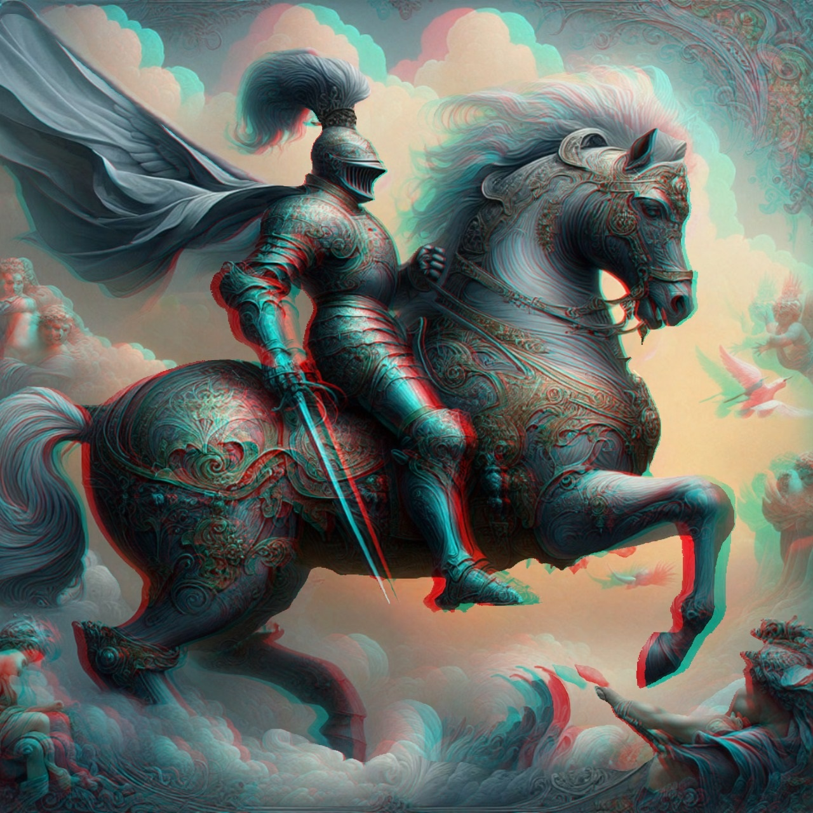
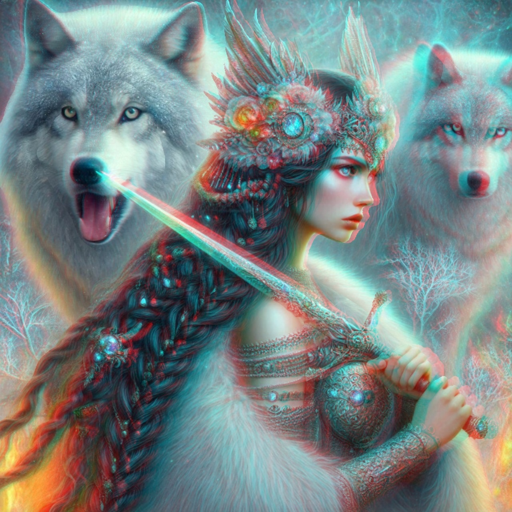

Timeless Romance · A collection by Wendy Dick
3D Pictures with GlassesAnaglyph Art Gallery
A little romance. A little wonder. A whole new depth.
Explore 11 images from Timeless Romance in 3D Anaglyph—from roses and secret gardens to knights and wolves.
Use red/cyan 3D glasses: red over your left eye, cyan over your right.
Choose any picture to open the large viewer.
A Moment Among the Roses
A little invitation to slow down: carved details, soft petals and a clock surrounded by flowers. Take a moment to explore the separate layers with your 3D glasses.
01 · Flowers & romance
Romantic Flowers in Anaglyph 3D
From the roses around the clock to a basket alive with butterflies, these floral pictures celebrate small details. Put on your red/cyan glasses and take your time with petals, leaves and the spaces between them.
{kind=link}

Roses & Butterflies
Follow the butterflies from the flowers into the foreground. The woven basket, loose roses and delicate leaves turn this romantic still life into a picture worth lingering over.
02 · Animals & birds
3D Animal Pictures: Cats, Birds & Butterflies
A secret garden, a lantern-lit tree and an imagined tropical encounter: three different moods, connected by a love of animals and decorative detail. These are creative illustrations, designed with their later 3D treatment in mind.
{kind=link}

A Cat in the Secret Garden
A watchful garden companion peeks through flowers and ferns. Look at the soft fur, curling leaves and weathered wall as you move your attention through the scene.
{kind=link}

The Lantern Keeper
A white cockatoo rests among blossom and warm lantern light. Pale feathers stand against the dark garden, giving this bird portrait its quiet, enchanted atmosphere.
{kind=link}

An Unexpected Visitor
A tiny butterfly meets a much larger garden resident. This imagined big cat belongs to a world of fantasy, where patterned fur and tropical foliage share the frame.
03 · Dreamlike places
Step into Romantic 3D Landscapes
Leave the garden for a riverside walk and a nostalgic village street. These 3D pictures for 3D glasses use foreground subjects and distant scenery to create an invitation to look beyond the surface.
{kind=link}

Swans Beneath the Stone Bridge
Two swans face one another in the foreground while the river leads towards a stone bridge. Bare branches, reflections and distant mist invite your eyes to wander deeper into the picture.
{kind=link}

A Journey Out of Time
Decorative metalwork and sweeping wings give this imagined classic car a character of its own. The cobbled street and old buildings provide a nostalgic setting for a journey with no timetable.
04 · Vintage portraits
Vintage Portraits with Flowers, Music & Woodland Magic
The collection has no continuous storyline. Instead, each portrait offers a small world of its own, from a quiet mushroom-gathering scene to a face surrounded by flowers and musical notes.
{kind=link}

The Woodland Collector
A flower-trimmed hat, a basket of mushrooms and a dress full of delicate textures suggest a woodland afternoon. There is no fixed story here: you can imagine your own.
{kind=link}

A Portrait in Flowers & Music
Flowers and lace frame a thoughtful face, with sheet music woven into the background. This romantic portrait brings small decorative details together in a layered composition.
05 · Knights & fantasy
Fantasy Art in Red/Cyan 3D
Armoured horses, elaborate costumes and watchful wolves bring a different energy to the final part of the gallery. Explore these fantasy anaglyph images individually, or open the large viewer and browse with the arrow keys.
{kind=link}

The Knight Above the Clouds
Engraved armour, a flowing cape and a proud horse carry the gallery into fantasy. Explore the overlapping forms and ornamental details before riding on to the final scene.
{kind=link}

Guardian of the Wolves
A sword crosses the foreground while two pale wolves watch from behind their guardian. This final portrait leaves the everyday world far behind—and offers a taste of the imagination inside the complete collection.
Behind the pictures
Designed for 3D, Carefully Finished by Hand
These pictures began as AI-generated artwork, created with the later 3D treatment in mind. They were then manually adjusted and made into red/cyan anaglyph images in Photoshop. Choosing the scene is only the beginning: the hand-finished work gives each illustration its particular sense of depth.
Timeless Romance in 3D Anaglyph is an art collection rather than a storybook. Flowers, animals, vintage-inspired portraits and fantasy scenes sit side by side, ready to explore at your own pace. You do not need to follow a plot or begin on a particular page.
Before you step inside
How to View 3D Pictures with Glasses
These red cyan 3D images contain two different views combined into one picture. The coloured lenses separate those views for your eyes, creating the impression of depth. Without glasses, the red and cyan outlines are visible.
Which 3D glasses do I need?
Use red/cyan anaglyph glasses, with the red lens on the left and the cyan lens on the right. You may know them as “red and blue glasses”, but check that the actual lens pair is red/cyan. Polarised cinema glasses and active-shutter glasses do not work with these pictures.
Can I view these pictures on a phone?
Yes. You can browse on a phone, tablet, laptop or desktop. A larger screen gives the intricate artwork more room, which is why this gallery is designed to be enjoyed on a computer as well. Keep the complete picture in view and choose a comfortable viewing distance.
How do I open the pictures in full screen?
Select any image to open the large viewer, then choose “Full screen” when your browser supports it. Use the previous and next buttons or your keyboard’s left and right arrow keys to browse. Escape exits browser full screen; close the viewer to return to the page. If browser full screen is unavailable, the large viewer still works.
Why do I still see coloured outlines or ghosting?
The result can vary with your glasses, display and viewing distance. Check the lens orientation and try turning off warm night-time display filters. Some colour changes or ghosting can remain. If viewing feels uncomfortable, take off the glasses and have a break.
Are these free 3D pictures to view?
Yes, you can explore these eleven images here without an account. Free viewing does not mean the artwork is offered for unrestricted reuse. The complete e-book contains 30 illustrations and is available through the bookshop links on this page.
Does the book include a continuous story?
No. It is a collection of 30 individual illustrations, originally generated with AI and then manually adjusted and converted into anaglyph 3D in Photoshop. Enjoy the images in any order, on your own or with someone who loves art and imagination.
Your next little escape
Eleven Pictures Here. Thirty in the Book.
Which scene would you like to step into again? Keep exploring flowers, animals, romantic details and fantasy art in Timeless Romance in 3D Anaglyph by Wendy Dick.
This gallery is a free introduction to the collection. Take your red/cyan glasses with you and discover all 30 illustrations in the complete digital art book.